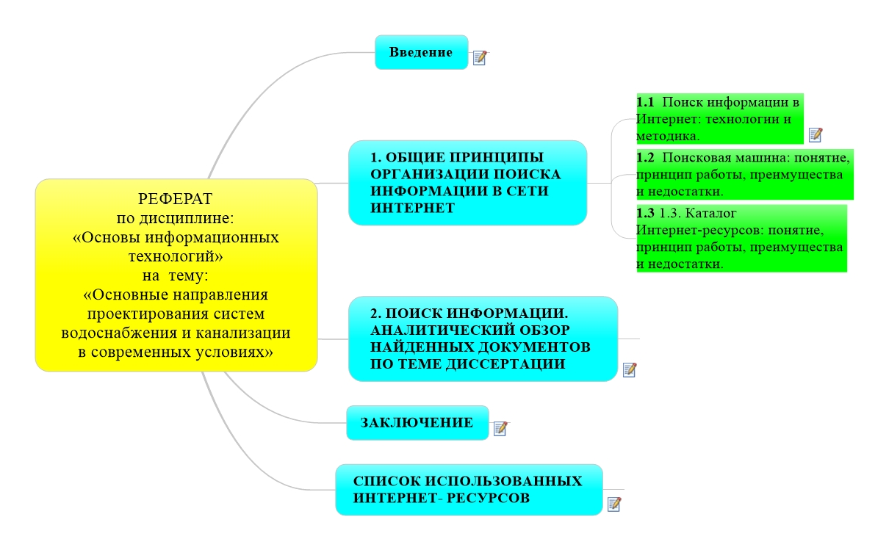

Реферат по дисциплине «Основы информационных технологий» на тему «Основные направления проектирования систем водоснабжения и канализации в современных условиях»
Выполнила Седлуха Светлана Вячеславовна.
Новополоцк 2020.
Выполнила Седлуха Светлана Вячеславовна.
Новополоцк 2020.